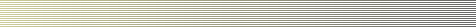

|  | |
|
Good
Morning February 20, 2007 Updated Daily Media Resources The Office of Public Relations
|
FOR IMMEDIATE USE October 12, 2006 Noted Scholar to Talk about e-Science in Lazerow Lecture KNOXVILLE –- Christine Borgman, one of the nation's leading authorities in scientific communication and science policy, will present the University of Tennessee School of Information Sciences' Samuel Lazerow Memorial Lecture on Oct. 18. Christine Borgman Borgman, a professor and presidential chair in information studies at the University of California Los Angeles, will share her insights into the drive for e-Science -- science that uses immense data sets that require grid computing -- and the many ways that information and research data can be shared in the digital age. "Scholars in all fields are taking advantage of new sources of data and new means to publish and distribute their work online," said Borgman, the author of more than 150 publications in the fields of information studies, computer science and communication. "Some fields are more advantaged than others by the array of content now online and by the tools and services available to use it." Borgman also will talk about the difficulties of sharing raw data rather than finished or published works. "A close examination of scholarly practices reveals that more disincentives than incentives exist to contribute documents and data for the general good. Scholars in all fields are rewarded for publishing; few are rewarded for managing information." Borgman is a co-principal investigator for the Center for Embedded Networked Sensing (CENS), and for two CENS projects -- CENSEI, for research on data management and policy, and Women@CENS, both funded by the National Science Foundation. Embedded Networked Sensing Systems use microprocessors linked to tiny motion detectors, cameras, and acoustic or chemical sensors to gather and report complex, real-time information about the natural world or man-made structures. From 1999 to 2005 she also led the education and evaluation team of the Alexandria Digital Earth Prototype Project (ADEPT). Through the project, a massive amount of information about the Earth was gathered using digital collections of everything from maps and images to text and multimedia diagrams, all referenced by geographical area. The resulting information was used to create a digital model of the planet, which then-Vice President Al Gore dubbed a "Digital Earth." Borgman's book, "From Gutenberg to the Global Information Infrastructure: Access to Information in a Networked World" (MIT Press, 2000), won the Best Information Science Book of the Year Award from the American Society for Information Science and Technology. Her next book, "Scholarship in the Digital Age: Information, Infrastructure, and the Internet," will be published by MIT Press in 2007. Borgman was a visiting scholar at the Oxford Internet Institute at the University of Oxford in England, a visiting professor in the Department of Information Science at Loughborough University in England, a Fulbright Visiting Professor at the University of Economic Sciences and at Eötvös Loránd University in Budapest, Hungary, and a Scholar-in-Residence at the Rockefeller Foundation Study and Conference Center in Bellagio, Italy. She has a doctorate in communication from Stanford University, a master's degree from the University of Pittsburgh, and a bachelor's degree from Michigan State University. For more information on Borgman, visit http://is.gseis.ucla.edu/cborgman The Samuel Lazerow Memorial Lectures are sponsored by the Institute for Scientific Information's (ISI) Corporate Awards Program, http://www.isinet.com/ The lecture series was established by ISI in 1983 to honor the memory of Samuel Lazerow, an outstanding librarian, administrator and pioneer in library automation. UT's School of Information Sciences is one of four schools that make up the College of Communication and Information. The other three schools are the School of Advertising and Public Relations, the School of Communication Studies and the School of Journalism and Electronic Media. --- Contacts: Joel Southern, (865) 974-6727, jsouthern@utk.edu April Moore, (865) 974-0463, amoore9@utk.edu |
|||||
|
Copyright ©2006 The University of Tennessee Office of Public Relations, Knoxville
TN 37996. The name, nickname, trademarks, logos, etc. (marks) of The University of Tennessee are its property and may not be used without permission. |
|